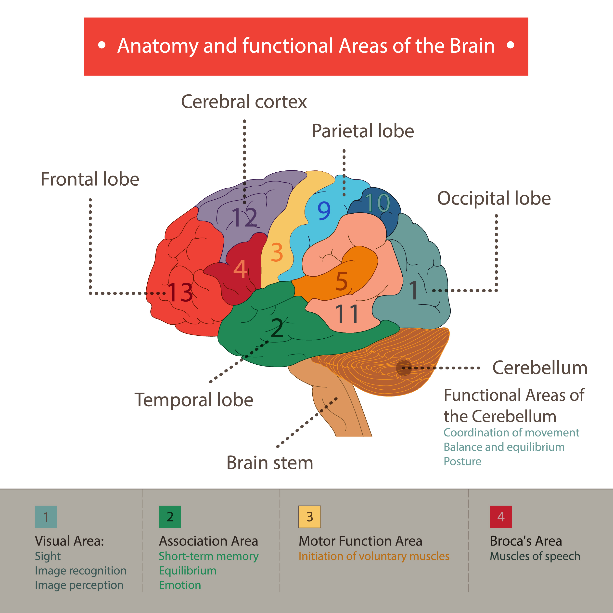

The functions of the brain as part of the Central Nervous System (CNS) is to regulate the majority of our body and mind purpose. This includes vital functions like breathing or heart rate, to basic functions like sleeping, eating, or sexual instinct, and even superior functions like thinking, remembering, reasoning, or talking. In order to carry-out any seemingly simple task, our brain has to perform thousands of processes to ensure that we properly complete the task. Proper brain function is the key to a healthy life.
Although the science of brain cell communication is well-understood, the complexity of thought processes is not well-defined. However, exploring the brain may help in understanding the bigger picture. The brain is primarily composed of neurons, which are cells that generate electrical impulses for communication.
It is estimated that the human brain has close to 100 billion neurons, which leads to thought formation.

One theory explains that thoughts are generated when neurons fire. Our external environment (such as home, relationships, media, etc.) leads to a pattern of neuron firing, which results in a thought process. A continuous pattern of neuronal firing reinforces the circuitry. This means that if we are put in the same situation twice, the firing of our neurons is going to be similar and reinforced. This is why people tend to react the same way to similar situations: because neurons, which are part of the circuit responsible for this response, fire robustly.
Memory is a complex process that allows us to code, store, and recover information. If the attentional system doesn't work properly, we won't be as efficient in doing such tasks. If we don't pay attention to something, we cannot code, store, or recover this information.

Short-term memory
In the course of a day, there are many times when you need to keep some piece of information in your head for just a few seconds. Maybe it is a number that you are “carrying over” to do a subtraction, or a persuasive argument that you are going to make as soon as the other person finishes talking. Either way, you are using your short-term memory.
In fact, those are two very good examples of why you usually hold information in your short-term memory: to accomplish something that you have planned to do. Perhaps the most extreme example of short-term memory is a chess master who can explore several possible solutions mentally before choosing the one that will lead to checkmate.
This ability to hold on to a piece of information temporarily in order to complete a task is specifically human. It causes certain regions of the brain to become very active, in particular the pre-frontal lobe.
This region, at the very front of the brain, is highly developed in humans. It is the reason that we have such high, upright foreheads, compared with the receding foreheads of our cousins the apes. Hence it is no surprise that the part of the brain that seems most active during one of the most human of activities is located precisely in this prefrontal region that is well developed only in human beings.
Long-term memory
Information is transferred from short-term memory (also known as working memory) to long-term memory through the hippocampus, so named because its shape resembles the curved tail of a seahorse (hippokampos in Greek). The hippocampus is a very old part of the cortex, evolutionarily, and is located in the inner fold of the temporal lobe.
All of the pieces of information decoded in the various sensory areas of the cortex converge in the hippocampus, which then sends them back where they came from.
The hippocampus is a bit like a sorting centre where these new sensations are compared with previously recorded ones. The hippocampus also creates associations among an object’s various properties.
When we remember new facts by repeating them or by employing various mnemonic devices, we are actually passing them through the hippocampus several times. The hippocampus keeps strengthening the associations among these new elements until, after a while, it no longer needs to do so. The cortex will have learned to associate these various properties itself to reconstruct what we call a memory.
In the 1970s, anthropologist Paul Ekman proposed that humans experienced six basic emotions: anger, fear, surprise, disgust, joy, and sadness.
Since then, scientists have disputed the exact number of human emotions — some researchers maintain there are only four, while others count as many as 27. And, scientists also debate whether they are universal to all human cultures and whether we’re born with them or learn them through experience. Even the definition of emotion is a topic of controversy. One thing is clear though — emotions arise from activity in distinct regions of the brain.
The limbic system is a group of interconnected structures located deep within the brain. It’s the part of the brain that’s responsible for behavioral and emotional responses.
Scientists haven’t reached an agreement about the full list of structures that make up the limbic system, but the following structures are generally accepted as part of the group:
Hypothalamus - In addition to controlling emotional responses, the hypothalamus is also involved in sexual responses, hormone release, and regulating body temperature.
Hippocampus - The hippocampus helps preserve and retrieve memories. It also plays a role in how you understand the spatial dimensions of your environment.
Amygdala - The amygdala helps coordinate responses to things in your environment, especially those that trigger an emotional response. This structure plays an important role in fear and anger.
Limbic cortex. - This part contains two structures, the cingulate gyrus and the parahippocampal gyrus. Together, they impact mood, motivation, and judgement.
When holding your friend’s hand, you feel the heat from their skin, the softness or roughness of their palm, and the pressure from their fingers. The sense of touch conveys important social information, helping strengthen bonds between people. If your friend grips your hand so hard it hurts, touch lets you know something is wrong or dangerous through the feeling of pain.

Sensations begin as signals generated by touch receptors in your skin. They travel along sensory nerves made up of bundled fibers that connect to neurons in the spinal cord. Then signals move to the thalamus, which relays information to the rest of the brain. Next stop is the somatosensory cortex, where signals are translated into a touch perception.
Somatosensory information from all over the body spreads onto the cortex forming a topographic map that curls around the brain like headphones.
Sensitive areas, like lips and fingertips, stimulate much larger regions of the cortex than less sensitive parts. A region’s sensitivity depends on the number of receptors per unit area and the distance between them. Unlike the very sensitive lips and hands, receptors on your back are few and far apart so it’s much less sensitive.
The medulla oblongata is the primary respiratory control center. Its main function is to send signals to the muscles that control respiration to cause breathing to occur. There are two regions in the medulla that control respiration:
The ventral respiratory group stimulates expiratory movements.
The dorsal respiratory group stimulates inspiratory movements.
The medulla also controls the reflexes for nonrespiratory air movements, such as coughing and sneezing reflexes, as well as other reflexes, like swallowing and vomiting.